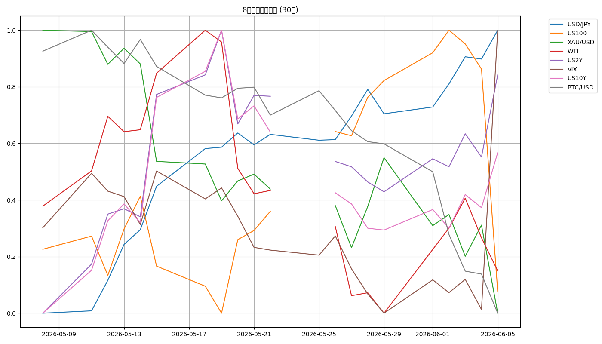

📈 CFD戦略ブリーフ — 6/8週
対象週: 2026-6-5_wk01（データ期間 2026-06-01→06-05 / snapshot 2026-06-07） ｜ ソース: wk01 review・meta・snapshot・boss市況・X headlines
Regime: Neutral（内部リスクオフ・whipsaw）
Add risk gate: 閉（VIX 21.51>18）
Reduce risk: 成立中（VIX>18）
機械判定=Neutral / boss 1次=「スタグフレーション＋ダブル引き締め・下方テール一段重く」→ 両論併記
1. 8ペア 30日スナップショット
| 銘柄 | 最新 | 30日% | wk05→wk01 |
|---|
| US100 | 28,957.6 | -0.95% | -4.5%(distribution) |
| BTC/USD | 60,922.7 | -24.02% | -17%(19ヶ月安値) |
| USD/JPY | 160.293 | +2.21% | +1.02円(160突破) |
| WTI | 90.540 | -5.11% | +3.18(レンジ) |
| XAU/USD | 4,365.3 | -7.52% | -195(2026安値) |
| US10Y | 4.536 | +3.94% | +0.083(5%窺う) |
| US2Y | 4.280 | +6.65% | +0.131 |
| VIX | 21.510 | +25.13% | +6.19(gate閉) |
JP225: 金曜終値の実測なし（snapshot8ペアに含まず／boss市況は5/7 ATH 62,833の言及のみ・最も脆い資産）
8ペア30日 正規化プロット

2. レジーム & ゲート状況
機械レジーム
Neutral
equities=flat / vol=normal / oil=range / gold=off / crypto=weak / yields=rising
Add risk ゲート
閉
VIX 21.51 > 18（6/5単日+39-40%）。再開＝VIX<18回帰＋6/16-17ダブル中銀通過＋US100 27,989維持
Reduce risk ゲート
成立中
VIX>18。追加: US100<27,989 / US10Y>4.6% / ドル円160実弾介入 / JP10Y>2.9% で株式エクスポージャー一段落とし
3. シナリオ（3分岐）
A. 観測優位（boss主筋）6/16-17まで軽く・戻り売り/ヘッジ優位
B. 円高カスケード6/16 BOJ 1.0%＋タカ派 or 実弾介入→2024年8月型
C. 健全なフラッシュNFP過大評価の巻き戻し（W杯雇用・AHE鈍化・VIXスパイク後の反発）
全資産が「ドル円160 × 満タン円ショート(-114.7K) × 円キャリー巻き戻し × 6/16-17ダブル中銀」の一枚岩。本震はダブル中銀。エッジのない場所で挟まれない。
4. CFD 銘柄別アクションプラン
USD/JPY キングピン・ノーポジ推奨
160超で介入・利上げの二重の壁。160売りは介入取りの高勝率だが介入なしだと金利差で踏まれる両刃。サイズ管理が生命線。
上=160.5-162(State St "line in the sand") ／ 下=159.5割れで巻き戻し→156→155 ／ トリガー: 実弾介入・6/16 BOJ・日米口先。
US100 戻り売り優位
半導体distribution主導の急落（Broadcom-12%・9週連騰ストップ）。CAPE 1.9σ割高×US10Y4.5%超のデュレーション直撃。高値追い厳禁。
最終防衛=27,989赤丸(割れで下加速) ／ 上=29,900回復が必要 ／ トリガー: 6/16-17ダブル中銀・Oracle決算(6/10)・半導体伝播。
JP225 最も脆い・新規見送り
円キャリー巻き戻し＋米株リスクオフのダブルパンチが最大リスク。2024年8月は15bp利上げでNikkei-12.4%。
5/7 ATH 62,833(金曜終値は1次資料に明示なし) ／ 6/16利上げ1.0%＋タカ派で8-12%調整シナリオ ／ ドル円160介入で米株以上に投げられる輸出株構造。
Gold (XAU) 撤退済→深押し待ち
2026年安値$4,365(gold=off)。実質金利上昇(US10Y4.5%)が構造ソブリン買いに勝つ局面。CFD残ポジは4390全撤退済（防衛的）。
下値=4,336割れ→$4,300/$4,250(ソブリン買いゾーン・分割で拾う) ／ 上=4,450→4,508が戻りの壁 ／ 長期JPM Q4 $5,000予想生存。
BTC/USD リスクオフ増幅器・監視のみ
$60,000割れ・19ヶ月安値。円キャリー最高ベータ資産。独立妙味なし。ドル円・Nasdaqと完全連動。
2024年8月は$64K→$49Kへキャリー巻き戻しで急落の前例 ／ 6/16カスケードで最も振れる ／ 監視のみ。
WTI $88-95レンジ端逆張り
フィジカルとペーパーの綱引き。在庫6週連続減でフィジカルはタイト。利回り上昇局面でも独立して地政学で動く。
下=トランプMOU署名で$85割れ ／ 上=再エスカ/タンカー事案で$95再トライ ／ 6/6ホルムズで弾道ミサイル/ドローン迎撃。
5. 週内タイムライン
- 6/8(月) リスクオフ継続。観測優位・ポジション軽く。NFP余波の半導体distribution波及度を確認。
- 6/10(水) 米CPI ＋ Oracle決算。上振れでUS10Y 4.7-4.8%トライ・利上げ織り込み加速。半導体distributionの試金石。
- 6/15-16(月火) BOJ会合。25bp(以上)利上げ織り込み80%。1.0%＋タカ派で円高カスケード起点／見送りなら一旦円急落。
- 6/16-17(火水) FOMC（新議長Kevin Warsh初FOMC） — ダブル中銀キングピン。ドット上方修正・利上げ語法リスク。タカ派でドル高・株安起点。
6. 監視トリガー（毎朝チェック）
VIX 18(成立中) / 22超→ Reduce risk発火中・構造的リスクオフ加速
US100 27,989割れ→ 下値の最終防衛割れ・調整深掘り
US10Y 4.6%突破(5%窺う)→ 米株デュレーション直撃
ドル円160実弾介入/レートチェック→ 急激な円高フラッシュ(2024年8月は3週で円+10%)
JP10Y 2.9%超→ 株式エクスポージャー一段落とし
Gold $4,336割れ→ $4,300/$4,250ソブリン買いゾーンで分割
7. GMポートフォリオ（参考・2026-06-07）
※今週は数値サマリーの1次提供なし（スクリーンショットのみ）。残高・評価損益の詳細は上記画像参照。スタンス: 6/16-17ダブル中銀に向け一部利確・現金比率引き上げを意識。半導体高PER偏重の見直し・小型バリューへの分散検討。
⚠️ 本資料は 2026-6-5_wk01 の確定データ（snapshot/review/meta/boss市況/X headlines）に基づく整理であり、創作・ソース外情報は含まない。
機械レジーム=Neutral と boss「スタグフレーション＋ダブル引き締め・下方テール一段重く」は「実測ラベル vs 前方視点」として併記。JP225は金曜終値の実測なし（snapshot8ペアに含まず）。ポートフォリオ数値は今週1次提供なし＝画像参照のみ。
投資助言ではなく GM運用の作戦整理。最終判断はミナト。 生成: ClaudeCode / 2026-06-07。